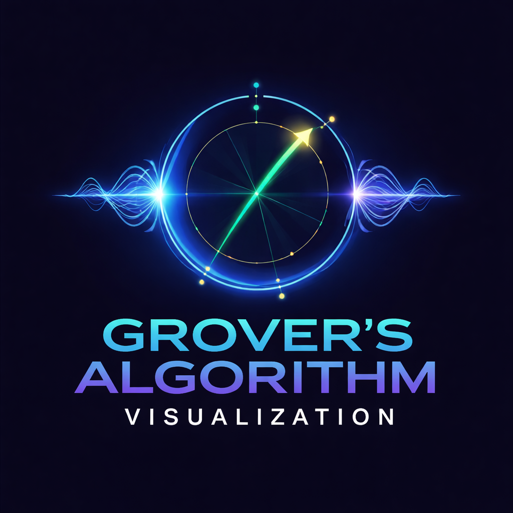

Original research on quantum computing, semiconductor testing methodology, and physics-driven computation — each paper paired with interactive simulations.

A comprehensive analytical framework comparing Static and Dynamic Part Average Testing in backend semiconductor manufacturing. Covers dependency modelling, variance analysis, hybrid PAT framework design, and an interactive backend simulator.
Why quantum computers become necessary as molecular systems scale in complexity — exploring the crossover point where classical methods break down and quantum approaches take over.